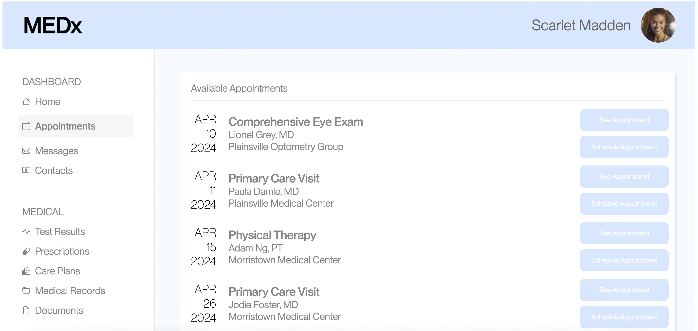
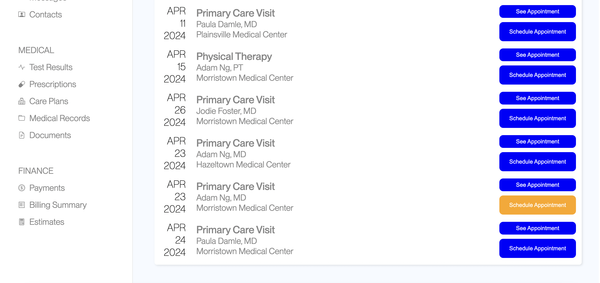

Overview of Project
In this project, an A/B test on the interaction with two versions of a webpage was run to determine which version of the webpage has better usability by focusing on three user interaction metrics that may be used to measure usability. A/B testing is used for comparing the two versions of the webpage as it helps in making useful observations on the effectiveness of one design over another. For example, by limiting and isolating the changes to the design of the webpage, the effectiveness of each change can be more accurately measured. Furthermore, A/B analysis employs statistical significance to determine whether the observed differences in performance between design variations are statistically significant or simply due to chance. This helps make confident decisions based on reliable evidence.
Part 1: Data Collection
Versions of Webpages
Version A: This is the version of the webpage given in class.
Version B: This version of the webpage was created by modifying the version A webpage to improve its usability. The modifications included changing the sizes of the two types of buttons (“See Appointment” button and “Schedule Appointment”button) and changing the color of the target button.
The two versions of the webpage can be seen here.
Part 2: Analysis
Hypotheses
The metrics used to measure the usability of the webpage are misclick rate, time on page, and distance of mouse movements.
Misclick rate
This is the frequency with which users click something else on the page before finding the correct button for the task. In the data collection, if a user clicks a button external to the task, a boolean flag TRUE is given.
Null hypothesis:
The users of version A webpage have the same misclick rate as the users of version B webpage.
Alternative hypothesis:
The users of version B webpage have less misclick rate than the users of version A webpage.
Prediction:
I predict that the null hypothesis will be rejected because version B of the webpage was designed to improve the usability of version A. Therefore, it is expected that there will be less users who push a button external to the task for the version B webpage.
Reasoning behind alternative hypothesis:
The reason for this alternative hypothesis is in the changes made to the two buttons in the webpage. In the version A webpage (before the change was made), the “Schedule Appointment” (target button) may perhaps be easily confused with the “See Appointment” button because these buttons are of the same size and color, and the low color contrast between the button and the text on the button made it hard to read the text of the buttons. However, in the version B webpage, the color contrast was improved so that the texts describing the buttons are more visible and the size between the two buttons are different. This change would perhaps reduce the confusion between the two different buttons and therefore reduce the misclick rate.
Time on page
This is the time spent on the webpage for each user group measured in miliseconds.
Null hypothesis:
Users spend the same amount of time on version A and version B webpages.
Alternative hypothesis:
Users spend less time on version B webpage than on version A webpage.
Prediction:
I predict that the null hypothesis will be rejected because the changes made in the version B webpage aimed to improve the user’s flow of completing the task could change the time needed to complete the task which may reduce the time spent on the webpage.
Reasoning behind alternative hypothesis:
The reason for this alternative hypothesis is in the improvement made specifically to the target button of the task. In the version B webpage, the button specific to the task of “scheduling an appointment with Adm Ng, MD at Morristown Medical Center on April 23, 2024” was modified so that only this button is in orange while all other buttons are in blue. This would reduce the time to find the button specific to the task because there is no need to read through all specifics of the appointment to find the button. Since the purpose of this webpage is to set an appointment, the users would likely leave the webpage once they finish the task. Therefore, the time spent on the version B webpage would decrease as a result of the reduced time spent on the task on this version of the webpage.
Total distance of mouse movements
This is the total distance of the user’s mouse movements in pixels.
Null hypothesis:
The users of the version A webpage have the same total distance of mouse movements as the users of the version B webpage.
Alternative hypothesis:
The users of version B webpage have shorter total distance of mouse movements than the users of version A webpage.
Prediction:
I predict that the null hypothesis will be rejected because users of the two different versions of the webpage would most likely have different flow through the webpage due to the differing designs of the two versions of the webpage. The user's flow through the webpage may perhaps be reflected by the users’ mouse movements, and therefore the total distance of the user’s mouse movements is expected to be different between the two versions of the webpage.
Reasoning behind alternative hypothesis:
The reason for this alternative hypothesis is in the design changes made in the version B website aimed to improve the user’s flow to complete the task. In the version B webpage, by making the target button stand out amongst all the other buttons on the webpage by modifying its color and size, the users could perhaps identify where to press to complete the task in a straightforward manner. This is in comparison to the version A webpage where the users may have to look through the page more carefully to identify which button to press in order to complete the task. In looking through the webpage, the users are likely to move the mouse to scroll the page and perhaps to move the cursor along the texts while finding the correct dates and and center name for the task. Therefore the users of the version B website may move the mouse less than the users of version A.
Statistical Tests on Data
Misclick rate
Type of statistical test: chi-squared test of independence
A chi-squared test was chosen for this metric because the predictor variable (versions of the webpage: version A or version B) is categorical and the outcome variable (True = user pushed a button external to the task or False = user did not push a button external to the task ) is also categorical. The test of independence is used because we want to see whether the versions of webpage the users use is independent of misclicking.
Statistical values:
df=1
The degrees of freedom here is 1 because there are 2 rows (version A or version B)and 2 columns (misclicked or did not misclick). This tells us that one of the values out of the four values (in the four cells: version A and True, version A and False, version B and True, version B and False) is independent. In other words, once a value has been put for one of the cells, the totals determine the rest of the values of the cells.
chi-squared=7.55
The chi-squared value shows the magnitude of difference in the frequency of misclicks between the two user groups. Since this chi-squared value is greater than the chi-squared critical value at a degrees of freedom of 1 and p value of 0.05, which is 3.84, the observed difference between the two user groups is significant.
p-value=0.00599
This shows that there is 0.599% chance of users of version A and users of version B having the same misclick rate. Or in other words 0.599% chance of the null hypothesis being correct.
Statistical significance and conclusion of null hypothesis:
We find a statistical significance in the misclick rate for version A webpage and version B webpage, as p <= 0.05. Therefore, we reject the null hypothesis. Since the proportion of misclick in version B (misclicked users of version B / all users of version B= 0.206) is less than the proportion of misclick in version A (misclicked users of version A / all users of version A = 0.021 ), there is sufficient evidence to accept the alternative hypothesis where users of version B webpage have less misclick rate than the users of version A webpage.
Time on page
Type of statistical test: one -tailed t-test
A one-tailed t-test was chosen for this metric because of two reasons. Firstly, the t-test is chosen because the outcome variable (the time spent on the page) is a continuous measure. Secondly a one-tailed t–test is chosen over a second-tailed t-test because the alternative hypothesis is one-tailed, where we are testing if the time spent on the version B is less than the time spent on version A. Since the direction of difference tested is specific, it is one-tailed.
Statistical values:
df=46.36
This is the degrees of freedom calculated by assuming unequal variance of the two user groups, and shows the flexibility in estimating the population parameter (the mean difference between the two groups). This value affects the critical value of the t-distribution, and when used with the t-value, it determines the interpretation of the result.
t-value=-2.67
This t-value shows the magnitude of the standardized difference between the mean time spent on version B webpage and the mean time spent on the version A webpage, given the variability within the data (degrees of freedom). Therefore a greater magnitude of the t-value would decrease the reliability of the null hypothesis. Since the t-value is negative, it indicates that the time spent on version A webpage is less than the time spent on the version B webpage (to confirm this direction, the average time spent on version A webpage was 12860 and the average time spent on version B webpage was 100235), if this t value is greater in magnitude than the critical t value. This is the opposite of the alternative hypothesis because the alternative hypothesis was that the time spent on version B webpage will be less than the time spent on the version A webpage.
p-value=0.00518
The p-value shows the probability of observing a t-score as extreme as -2.67 if there is no true difference between the two user groups (if it is by chance that the users of version A spent less time on the webpage than users of version B).
Statistical significance and conclusion of null hypothesis:
The difference in time spent on the two versions of the webpage is significant because the p-value is less than the typical significance level of 0.05. Therefore, we have enough evidence to reject the null hypothesis. However, the direction of the difference between the two user groups is the opposite from the alternative hypothesis. Therefore, there is no evidence that the users of version B spend less time on the webpage than the users of version A. Instead there is evidence that users of version A spend less time on the webpage than the users of version B.
Total distance of mouse movements
Type of statistical test: one -tailed t-test
A one-tailed t-test was chosen for this metric because of two reasons. Firstly, the t-test is chosen because the outcome variable (the time spent on the page) is a continuous measure. Secondly a one-tailed t–test is chosen over a second-tailed t-test because the alternative hypothesis is one-tailed, where we are testing if the time spent on the version B is less than the time spent on version A. Since the direction of difference tested is specific, it is one-tailed.
Statistical values:
df=70.83
This is the degrees of freedom calculated by assuming unequal variance of the two user groups, and shows the flexibility in estimating the population parameter (the mean difference between the two groups). This value affects the critical value of the t-distribution, and when used with the t-value, it determines the interpretation of the result. Compared to the degrees of freedom for the time on page metric, this degree of freedom is larger which would mean that the t distribution will be closer to a normal distribution so the probability of extreme values decrease.
t-score=2.33
This t-value shows the magnitude of the standardized difference between the total distance of mouse movements on version B webpage and the total distance of mouse movements on the version A webpage, given the variability within the data (degrees of freedom). Therefore a greater magnitude of the t-value would decrease the reliability of the null hypothesis (that there is no difference between the groups). Since the t-value is positive, it indicates that the total distance of mouse movements in version A webpage is greater than the total distance of mouse movements in version B, if this t value is greater than the critical t value. This is in line with the alternative hypothesis.
p-value=0.989
The p-value shows the probability of observing a t-score as extreme as 2.33 if there is no true difference between the two user groups (if it is by chance that the total distance of mouse movement in version B is less than the total distance of mouse movement in version A).
Statistical significance and conclusion:
We find no statistical significance in the difference of total distance of mouse movements between version A and version B webpage because the p-value is greater than the typical significance level of 0.05. Therefore, we fail to reject the null hypothesis that the users of the version A webpage have the same total distance of mouse movements as the users of the version B webpage.
Part 3: Summary Statistics and Discussion
From the statistical analysis above, it has been seen that there is a statistically significant difference in misclick rate and the time spent on the webpage between users of the two versions of webpage, but no statistical difference in the total distance of mouse movements. For all of these metrics, there were 34 data points for version A webpage and 47 data points for version B webpage, corresponding to the number of tested users for the two versions of webpages. Of the 34 users that tested on version A, 7 had misclicked a button while 27 of them did not misclick a button, and of the 47 users that tested on version B, 1 user misclicked a button while 46 of them did not misclick a button. Converting this data into proportion, 20.6% of the version A users misclicked a button while 2.1% of the version B users misclicked a button. Therefore, combined with the statistical significance of the data, it could be concluded that version B users had less misclick rate than the version A users. This is in line with the alternative hypothesis, and based on this metric, it could be inferred that the version B webpage had improved usability than the version A webpage as intended. However, while the difference in the time spent on the webpage between the user groups was statistically significant, the t-value was negative. This indicates that the version A users spent less time on the webpage than the version B users. This can also be seen in the mean time spent on the webpage for the two user groups, which was 12860 milliseconds for version A user and 100235 milliseconds for the version B user. Therefore, this result is against the alternative hypothesis and perhaps does not support the inference made from the result on the misclick rate which is that version B webpage has increased usability than the version A webpage. Similarly, the analysis of mouse movement distance also does not support this inference because while the mean distance of mouse movement for version B (2685.15 pixels) was less than for version A (4006.56 pixels), the difference was not statistically significant.
While such inferences about the two version of the webpage could be made, there could also have been factors other than the usability of the website that could have affected the result. For example, the users had already seen the webpage and was familiar with what the target button is before testing on both version A and version B. The users went up to test on version A one by one while they were also working on this version A webpage to create their own version B webpage. Therefore, while those that went to test on version A webpage may have been somewhat unfamiliar with the task and page, those who went later to test on the version A webpage would have been very familiar with the page and target button, as it could be seen in the wide variance (140609949 milliseconds) on version A compared to the variance on version B (500394 milliseconds). The median of the time spent on the webpages may also support this point because the median for version B webpage (7037 milliseconds) was less than the median for version A webpage (8526.5 milliseconds), where this opposite results compared to the average could be seen if there was an outlier user of version A that spent very little time on the webpage because of their familiarity with the webpage. On the other hand, the users saw the version B webpage for the first time when testing, and this may have caused a longer time spent on the webpage even if the usability had improved. Therefore, the usability of the two versions of the webpage may not have been accurately measured using any metrics in this setting.